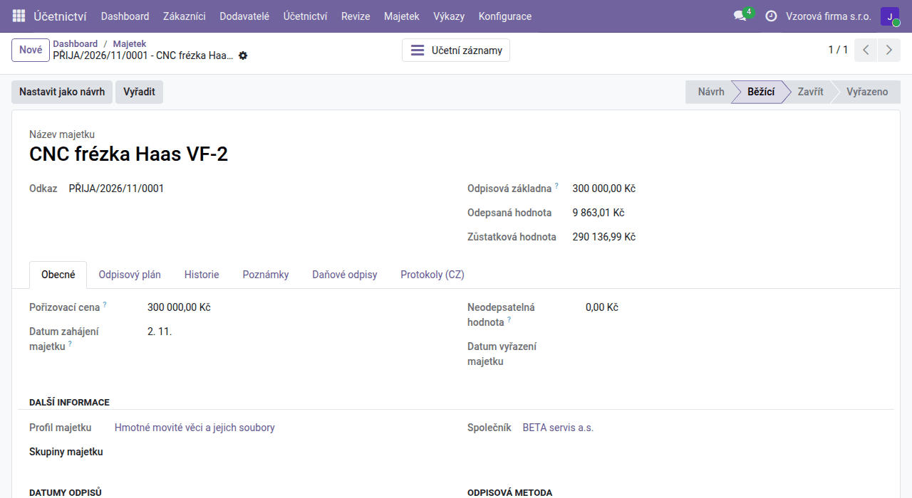
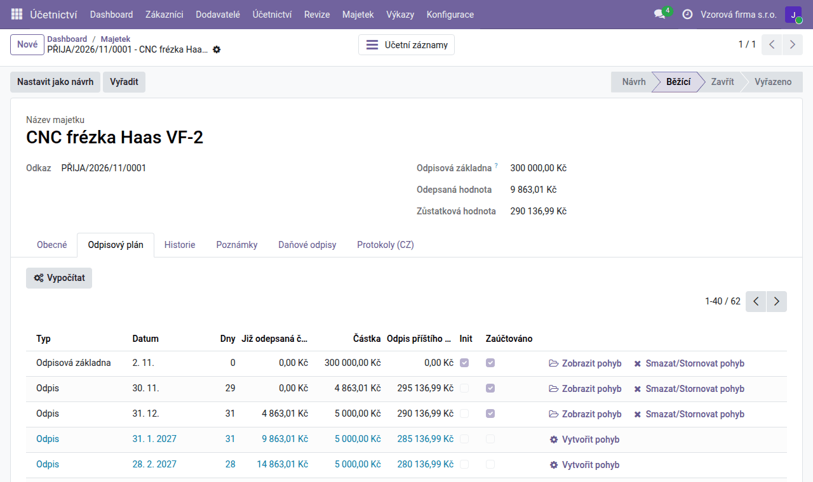
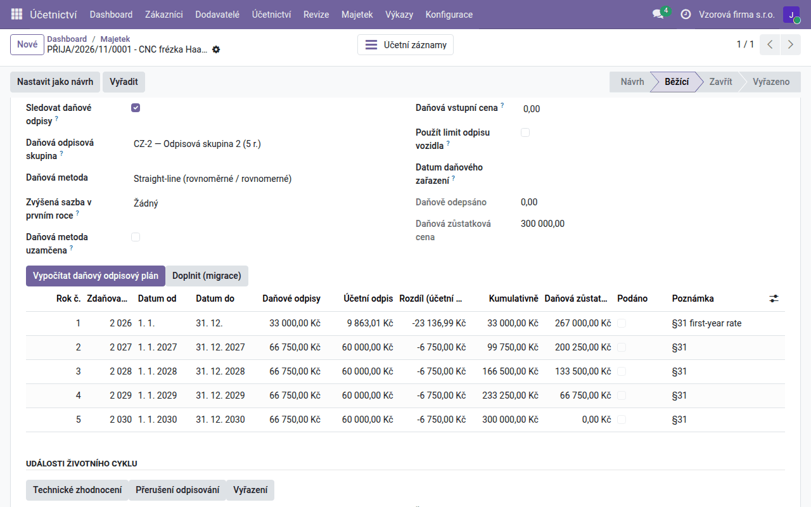

Návod k úloze
Dlouhodobý majetek a odpisy
Dlouhodobý majetek od přijaté faktury po vyřazení — profily majetku, účetní odpisový plán a jeho měsíční zápisy, české daňové odpisové skupiny, porovnání na konci roku a protokoly o zařazení a vyřazení.
| Země | Česko |
|---|---|
| Edice | Odoo Community |
| Zahrnuje | account_asset_management, l10n_cz_account_asset_profile, account_asset_tax, account_asset_tax_oca, l10n_cz_account_asset_tax, l10n_cz_asset_protocol_base, l10n_cz_asset_protocol_oca, l10n_cz_vat_return |
K čemu tento návod slouží
Odoo vede ke každému dlouhodobému majetku dva odpisové plány, stejně jako české právo: účetní, který se účtuje, a daňový, který se jen počítá a porovnává. Tento návod provází jeden majetek oběma: od přijaté faktury přes zařazení do užívání a měsíční zápisy po konec roku a vyřazení.
Vše je v Účetnictví → Majetek, Účetnictví → Výkazy a Účetnictví → Konfigurace. Pojmy vysvětluje Odoo pro českého účetního.
Profily majetku
Každý majetek má profil majetku: říká, které účty majetek a jeho odpisy používají a jak dlouho se odpisuje. Česká lokalizace jich vytvoří deset, jeden pro každý odpisovaný účet majetku (Účetnictví → Konfigurace → Majetek → Profily majetku):
| Profil | Účet majetku | Oprávky | Roky |
|---|---|---|---|
| Software | 013000 | 073000 | 3 |
| Stavby | 021000 | 081000 | 30 |
| Hmotné movité věci a jejich soubory | 022000 | 082000 | 5 |
| … a sedm dalších | 012–029 | 072–089 | 5 až 10 |
Všechny účtují odpisy na 551000, rovnoměrně, jedním zápisem měsíčně,
první období v poměru dnů, po které byl majetek držen (Prorata Temporis).
Doby odpisování jsou výchozí hodnoty, ne zákon: před prvním majetkem je
nastavte podle svého odpisového plánu a tam, kde jeden účet obsahuje majetek
s různou dobou použitelnosti, si přidejte vlastní profily. Úplný seznam
a význam jednotlivých nastavení je v
l10n_cz_account_asset_profile.
Od faktury k majetku
Na přijaté faktuře (Účetnictví → Dodavatelé → Přijaté faktury) vyberte na řádku majetku Profil majetku. Účet řádku se změní na účet majetku z profilu a potvrzením faktury vznikne majetek ve stavu Návrh. Jako daň vyberte dvojče s přídomkem Majetek (21% Majetek), aby se základ vykázal i na ř. 47 přiznání k DPH (Nastavení předkontací).
Zaúčtování stroje za 300 000 Kč při 21 % DPH:
| Účet | MD | D |
|---|---|---|
| 022000 Hmotné movité věci a jejich soubory | 300 000 | |
| 343121 DPH základní sazba vstup | 63 000 | |
| 321000 Dodavatelé | 363 000 |
Faktura jde rovnou na účet majetku. Pokud pořizovací cenu nejprve sbíráte na účtu 042 — více faktur, doprava, montáž — zaúčtujte tyto faktury na 042000 bez profilu a v den uvedení do užívání zaúčtujte interní doklad 022000 / 042000 s Profilem majetku na řádku 022000: majetek vznikne z tohoto zápisu stejným způsobem.
Majetek lze zadat i ručně v Účetnictví → Majetek → Majetek → Nové — například majetek převzatý z předchozího systému.
Zařazení majetku do užívání
Otevřete majetek ve stavu návrh v Účetnictví → Majetek → Majetek:
- Zkontrolujte Pořizovací cenu, Datum zahájení majetku (den, od kterého se odpisuje — chcete-li odpisovat celé měsíce, nastavte první den měsíce) a Počet let; pocházejí z faktury a z profilu a na návrhu je lze změnit.
- Na kartě Protokoly (CZ) vyplňte Inventární číslo, Místo umístění a Odpovědnou osobu.
- Klikněte na Potvrdit majetek. Majetek je ve stavu Běžící a karta Odpisový plán ukazuje plán: jeden řádek za měsíc.

Přes ozubené kolečko ⚙ → Tisk → Protokol o zařazení majetku vytisknete
protokol o zařazení s inventárním číslem, oceněním, odpisovým plánem
a podpisovými řádky, které účetní doklad potřebuje
(l10n_cz_asset_protocol_base).
Měsíční odpisy
Účetnictví → Majetek → Spočítat majetky: zadejte Datum, do kterého se má odpisovat (poslední den měsíce), a klikněte na Vypočítat. Odoo zaúčtuje každý dosud nezaúčtovaný řádek plánu každého běžícího majetku s datem do tohoto dne; spouštějte jednou měsíčně, nebo jednou na konci roku.

Zaúčtování (stroj výše, zařazený 2. listopadu, pět let):
| Doklad | Účet | MD | D |
|---|---|---|---|
| Odpis za listopad (29 dnů) | 551000 Odpisy dlouhodobého nehmotného a hmotného majetku | 4 863,01 | |
| 082000 oprávky | 4 863,01 | ||
| Odpis za prosinec | 551000 | 5 000,00 | |
| 082000 | 5 000,00 |
Celý měsíc je 300 000 / 60 = 5 000 Kč; první je v poměru dnů. Na plánu tlačítko Vytvořit pohyb zaúčtuje jediný řádek a Smazat/Stornovat pohyb zaúčtovaný řádek vrátí.
Daňové odpisy
Daňové odpisy se řídí šesti odpisovými skupinami zákona o daních z příjmů a nikdy se neúčtují. Na majetku, karta Daňové odpisy:
- Zaškrtněte Sledovat daňové odpisy.
- Zvolte Daňovou odpisovou skupinu (CZ-1 až CZ-6). Do které skupiny majetek patří, plyne z toho, co to je (příloha č. 1 zákona), ne z jeho účtu — rozhodnutí je na vás.
- Zvolte Daňovou metodu: rovnoměrné, zrychlené, nebo u bezemisních vozidel ve skupině 2 mimořádné odpisy (§ 30a). Po uzavření prvního roku ji už nelze změnit.
- Zkontrolujte Daňovou vstupní cenu — vyplní se z pořizovací ceny; změňte ji tam, kde se daňová vstupní cena liší — a klikněte na Vypočítat daňový odpisový plán.

Plán má jeden řádek za rok a vedle něj účetní odpis téhož roku a rozdíl. Pro stroj výše ve skupině 2, rovnoměrně:
| Rok | Daňový odpis | Sazba | Účetní odpis |
|---|---|---|---|
| 2026 | 33 000 | 11 % | 9 863,01 |
| 2027 až 2030 | 66 750 ročně | 22,25 % | 60 000 ročně |
První rok dostane plnou sazbu prvního roku bez ohledu na měsíc zařazení.
Tlačítka Technické zhodnocení, Přerušení odpisování a Vyřazení
zaznamenají to, co plán později mění; sazby, zvýšené sazby v prvním roce
a všechna pravidla výpočtu jsou v
account_asset_tax a
l10n_cz_account_asset_tax.
Patří-li všechen majetek profilu do jedné skupiny, nastavte skupinu jednou na profilu (blok Výchozí nastavení daňových odpisů) a nový majetek ji převezme. Pro majetek, jehož daňové odpisy začaly před Odoo, použijte Doplnit (migrace).
Na konci roku
- Porovnejte oba plány. Účetnictví → Výkazy → Porovnání účetních
a daňových odpisů, rok a Vypočítat: za každý majetek účetní a daňový
odpis, částka, o kterou se v přiznání k dani z příjmů zvyšuje nebo snižuje
výsledek hospodaření (ř. 50, jsou-li vyšší účetní odpisy, ř. 150, jsou-li
vyšší daňové), a odložená daň. Zaúčtovat odloženou daň (návrh) připraví
zápis 481 / 592; potřebuje deník a účty odložené daně na formuláři
společnosti
(
account_asset_tax). - Vytiskněte registr. Účetnictví → Výkazy → Registr daňových odpisů, rok a Tisk registru: majetek podle odpisových skupin s odpisem roku a zůstatkovými cenami.
- Uzavřete daňový rok. Po podání přiznání k dani z příjmů Účetnictví → Konfigurace → Uzavřít rok daňových odpisů a Uzavřít rok. Řádky plánů do tohoto roku se zmrazí a metoda každého majetku se uzamkne.
Vyřazení
- Zaúčtujte odpisy do měsíce před vyřazením (Měsíční odpisy).
- Na majetku klikněte na Vyřadit. Zadejte Datum vyřazení majetku a zvolte Pravidlo zápisu vyřazení: Zůstatková hodnota odepíše zbytek majetku na Účet zůstatkové ceny, který vyberete (například 541000 při prodeji); Zisk/Ztráta z prodeje vezme Prodejní hodnotu a rozdíl zaúčtuje na účet zisku nebo ztráty. Žádný účet není přednastaven — vybírejte je pokaždé.
- Generovat zápisy vyřazení. Odoo zaúčtuje odpis do data vyřazení a připraví zápis vyřazení jako návrh; zkontrolujte ho a zaúčtujte.
Pro stroj vyřazený v polovině ledna s pravidlem Zůstatková hodnota:
| Účet | MD | D |
|---|---|---|
| 082000 oprávky | 12 121,07 | |
| 541000 Zůstatková cena prodaného dlouhodobého nehmotného a hmotného majetku | 287 878,93 | |
| 022000 Hmotné movité věci a jejich soubory | 300 000,00 |
Majetek je ve stavu Vyřazeno a jeho daňový plán končí polovinou ročního odpisu v roce vyřazení. Na kartě Protokoly (CZ) zaznamenejte Způsob vyřazení a Důvod vyřazení a přes ozubené kolečko vytiskněte Protokol o vyřazení majetku. Samotný prodej se fakturuje jako obvykle, s výnosem na 641000.
Kontrola na konci měsíce a roku
- Každý majetek pořízený v období je ve stavu Běžící, ne Návrh (seznam v Účetnictví → Majetek → Majetek filtrujte podle stavu).
- Spočítat majetky bylo spuštěno k poslednímu dni období: obrat účtu 551000 za měsíc odpovídá plánu.
- Zůstatky účtů 01x a 02x se rovnají pořizovacím cenám běžícího majetku a zůstatky účtů 07x a 08x Odepsané hodnotě.